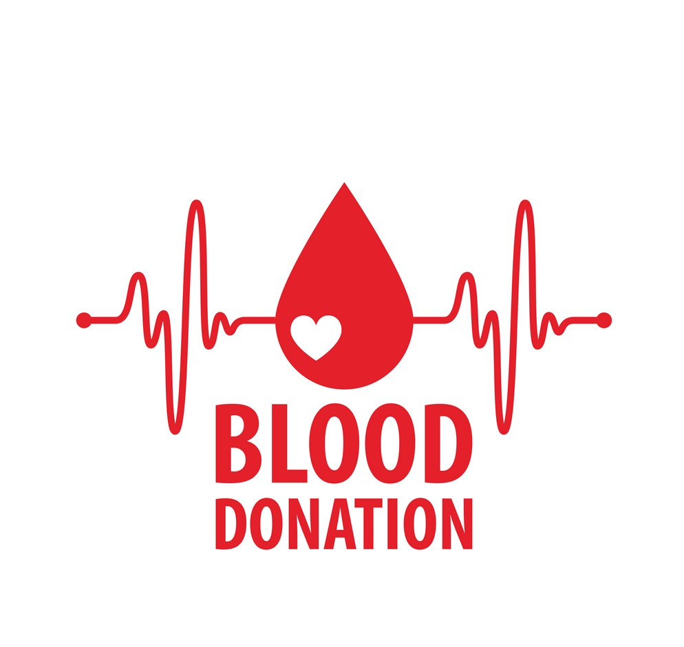
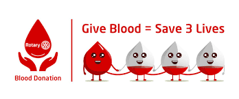

A blood donation occurs when a person voluntarily has blood drawn and used for transfusions and/or made into biopharmaceutical medications by a process called fractionation (separation of whole blood components). Donation may be of whole blood, or of specific components directly (apheresis). Blood banks often participate in the collection process as well as the procedures that follow it. Today in the developed world, most blood donors are unpaid volunteers who donate blood for a community supply. In some countries, established supplies are limited and donors usually give blood when family or friends need a transfusion (directed donation). Many donors donate for several reasons, such as a form of charity, general awareness regarding the demand for blood, increased confidence in oneself, helping a personal friend or relative, and social pressure. Despite the many reasons that people donate, not enough potential donors actively donate. However, this is reversed during disasters when blood donations increase, often creating an excess supply that will have to be later discarded. In countries that allow paid donation some people are paid, and in some cases there are incentives other than money such as paid time off from work. People can also have blood drawn for their own future use (autologous donation). Donating is relatively safe, but some donors have bruising where the needle is inserted or may feel faint.
Blood is Life
- 
- 
Blood Donation.
A SAFER, MORE PLENTIFUL SUPPLY Every day in the world’s poorest countries, people die because of a shortage of blood. GBF helps blood collectors in these countries by providing money, equipment, training and other forms of support – including launching voluntary blood donation programs.

Services.
Dhamni is a blood bank chain which offers to catter the blood requirements in remote areas. We are offering services to supply blood to the needy recipients and to collect blood from the donors at the comfort of their homes. Dhamni is providing services in the remote areas as well as the areas with a lack of blood supply.
India has the world's largest shortage of blood, with all states together battling a huge shortfall of 41 million units and demand outstripping supply by over 400%, says the first of its kind study published in the journal The Lancet. And demand is rising, says the findings. The overall global shortfall is 100 million units.
About us.
India has the world's largest shortage of blood, with all states
together battling a huge shortfall of 41 million units and demand
outstripping supply by over 400%, says the first of its kind study
published in the journal The Lancet. And demand is rising, says the
findings. Every day 12,000 people in India die due to the sheer lack
of donated blood. India collects 11 million units of blood but needs
15 million units, so there’s a deficit of 4 million units. Over 40
districts in India don’t have a single blood bank. One reason of this
blood shortage might be the lack of responsible attitude from
capable donors which comes due to the time taking procedure and
risks of careless handling by the hospital staff.
The solution to this problem is “Dhamni”. Dhamni which means the
artery- Blood vessel which carries blood from heart to the body
parts. Just as the name suggests Dhamni will supply blood from the
heart- the donors to the needed. Dhamni is a blood bank chain which
will provide blood collection facilities at your doorstep. The blood
will be collected from the potential donor at the comfort of their
home and will be supplied on the basis of priority.
Contact.
Contact us for any queries.
A team effort of team >JIGYASA